Effort and elapsed time stay prominent. The work scale labels 0%, 100% average work and 200%+, while retaining exact effort above the scale. The estimated average block interval is secondary. No overdue badge, deadline or completion percentage.
Real dashboard, synthetic API data, captured and reviewed through the shared Playwright MCP on October 28, 2026 (EDT). Desktop 1366px and mobile 390px. No controls in this card, so no separate disabled state. Loading and error use the dashboard’s existing unavailable-value treatment. Source revision · 20-language mobile checks · Verification and startup instructions
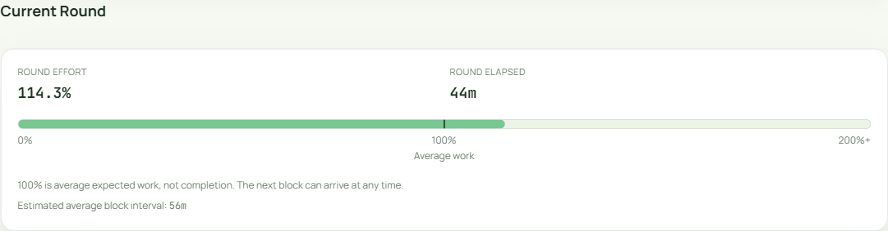
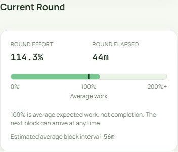
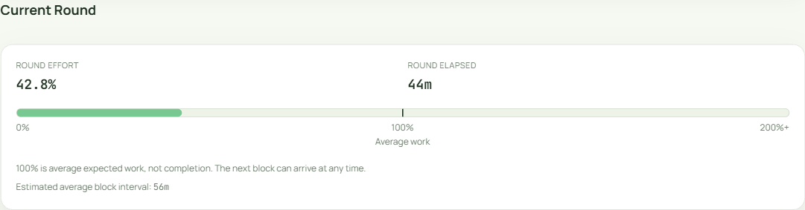
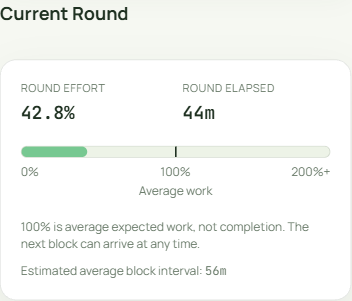
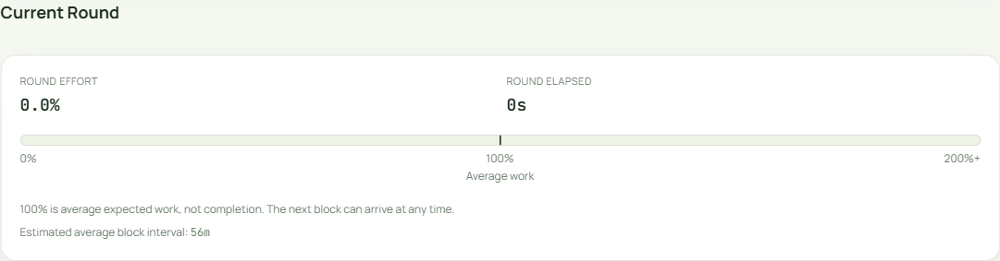
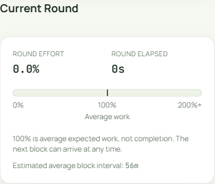
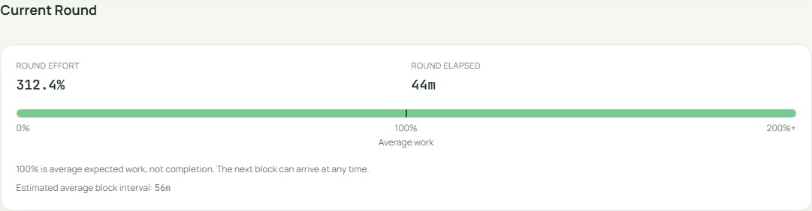
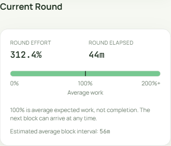
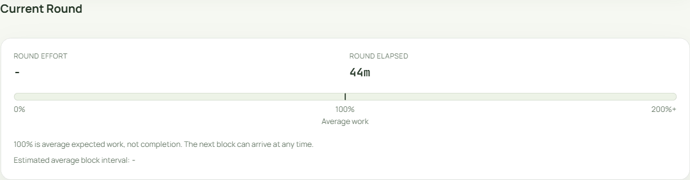
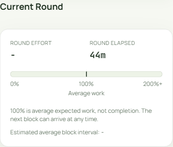
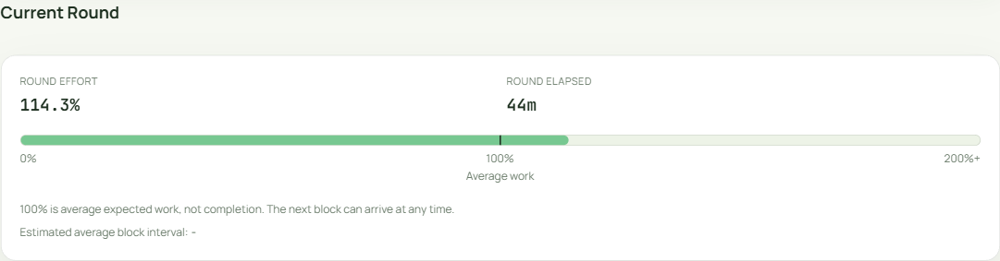
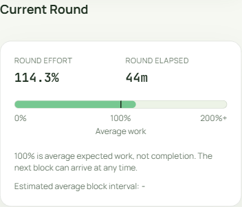
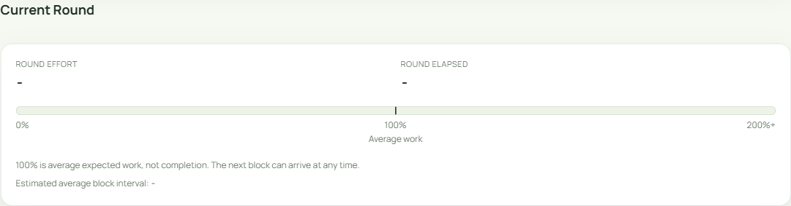
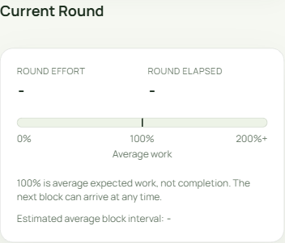
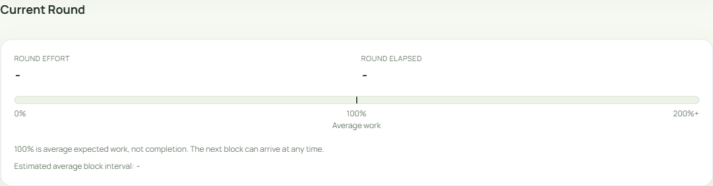
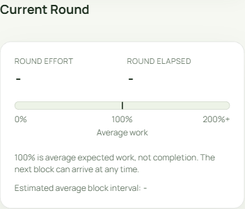
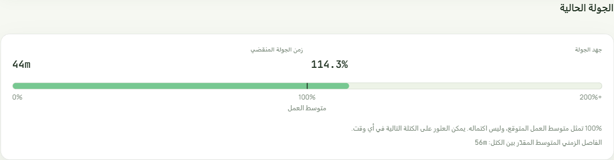
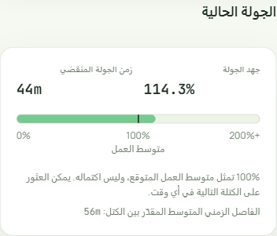
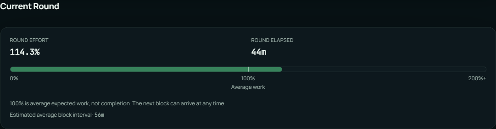
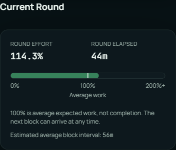